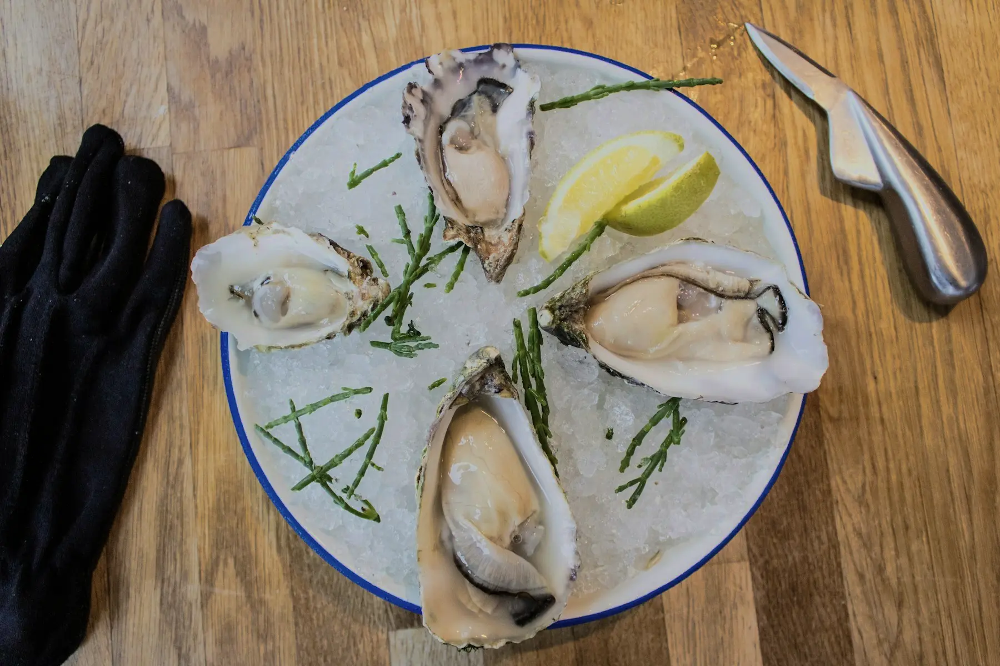
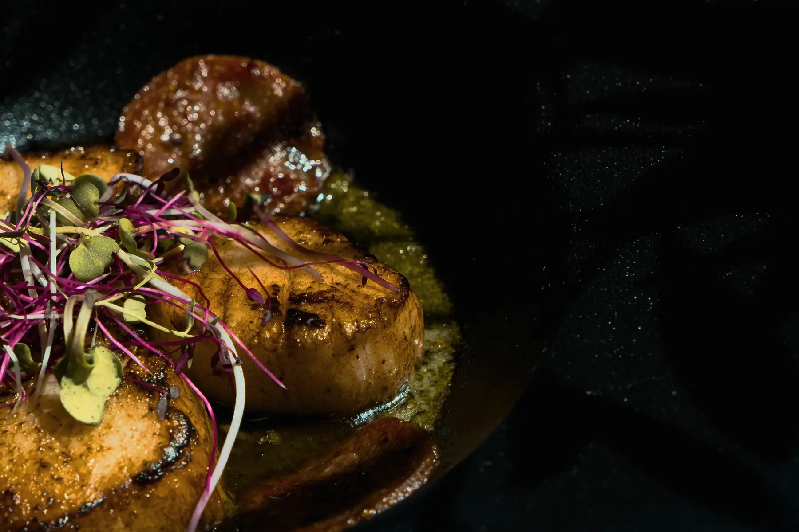
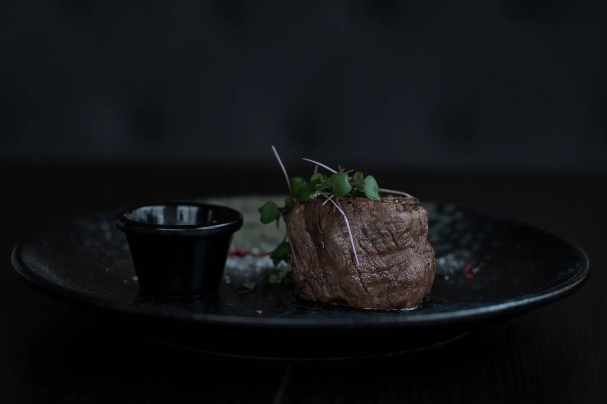
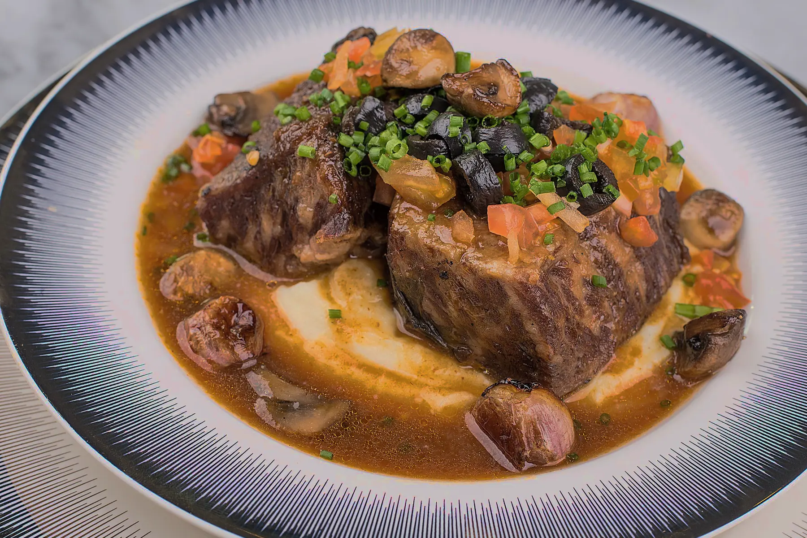
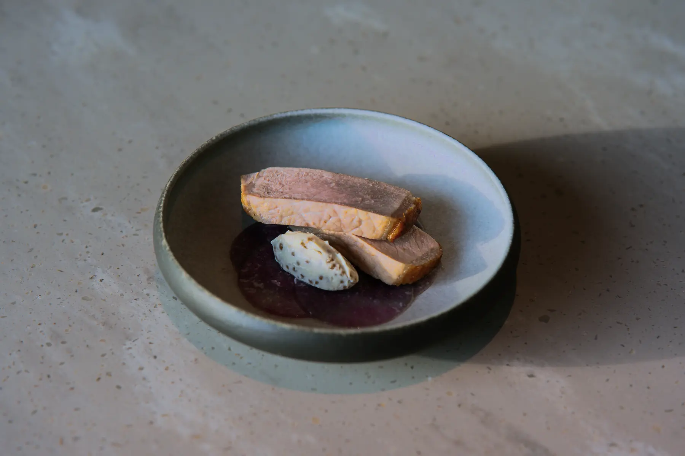
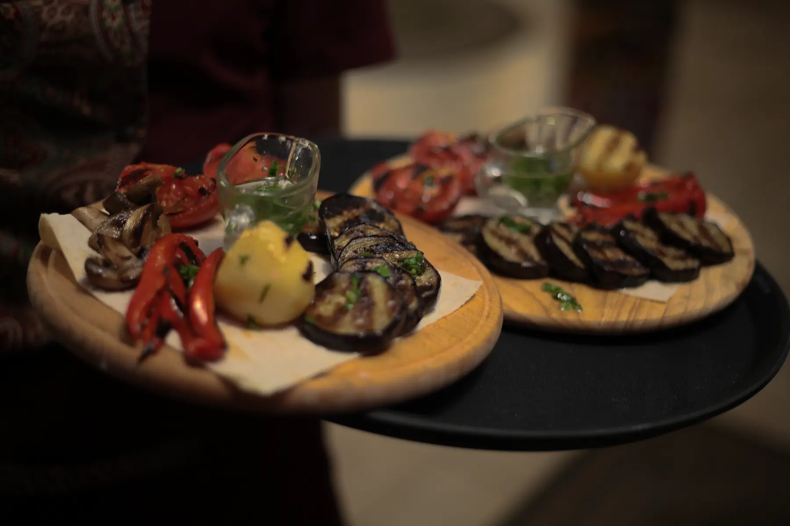
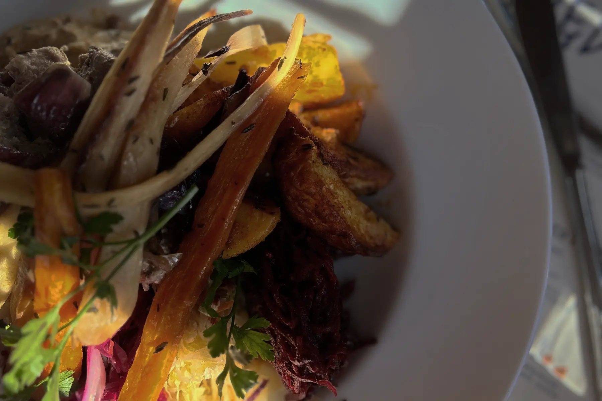
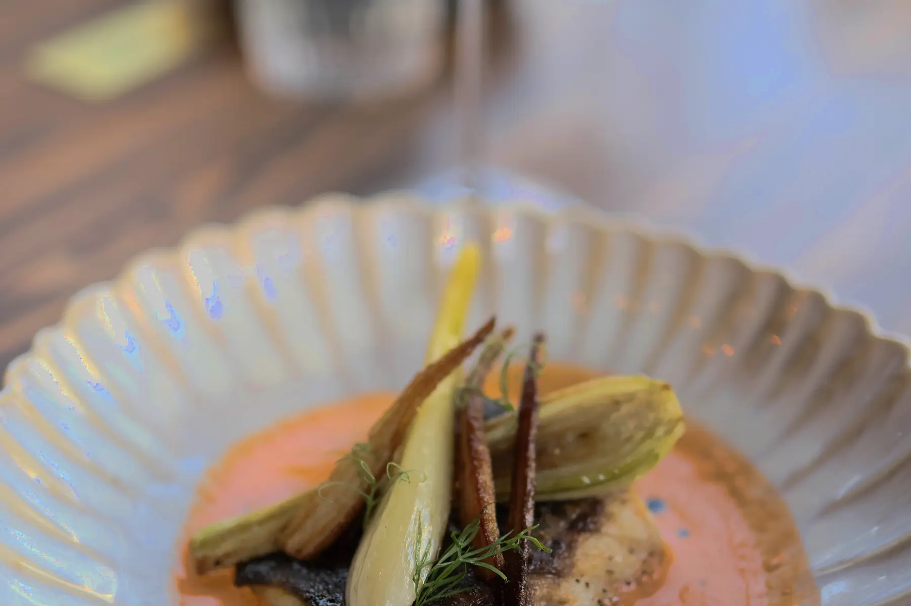
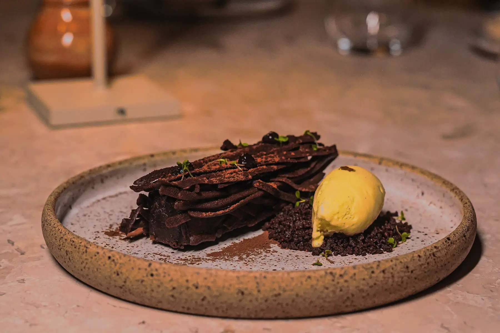
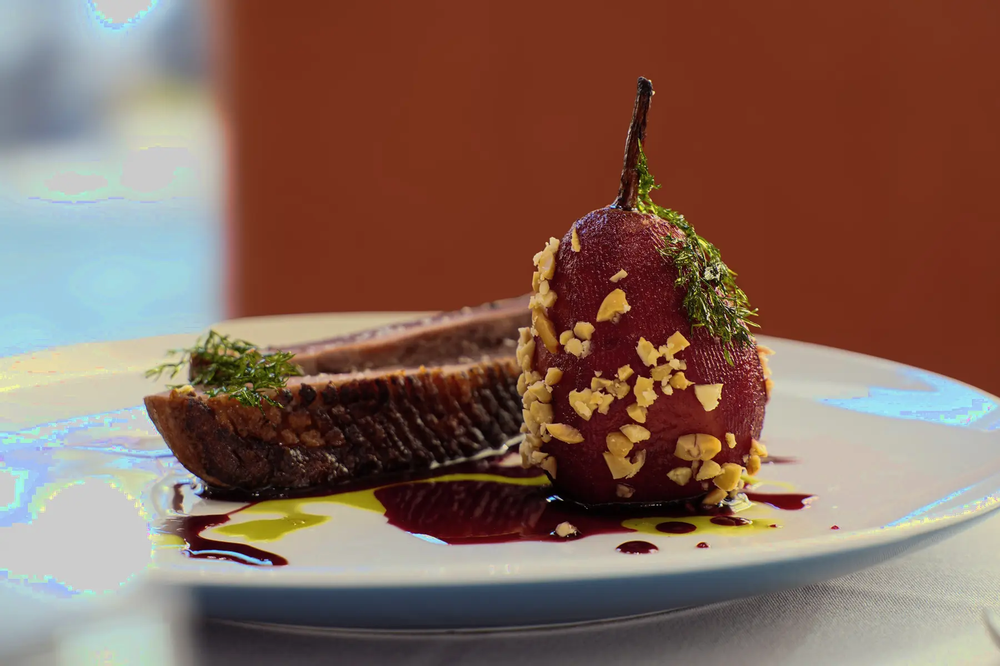

北海岸生蠔
NT$ 720蘋果紅酒醋汁 · 雲杉油｜六顆
查看餐點 →菜單由海岸風土展開，以硬木餘燼完成。內容將隨著海況、季節與鄰近農場的收成調整。

蘋果紅酒醋汁 · 雲杉油｜六顆
查看餐點 →
榛果奶油 · 海萵苣 · 煙燻魚卵
查看餐點 →
帶骨肋眼 · 焦香青蔥 · 海鹽 · 煙燻肉汁
查看餐點 →
黑蒜 · 發酵辣椒 · 牛骨髓
查看餐點 →
海岸李子 · 菊苣 · 杜松煙香
查看餐點 →
榛果 · 熟成起司 · 海藻奶油
查看餐點 →
海岸香草 · 發酵鮮奶油 · 蘋果
查看餐點 →
炭火高湯 · 甲殼油 · 海岸葉菜
查看餐點 →
沙棘 · 麥芽 · 竹炭
查看餐點 →
榛果奶油冰淇淋 · 月桂葉 · 裸麥
查看餐點 →